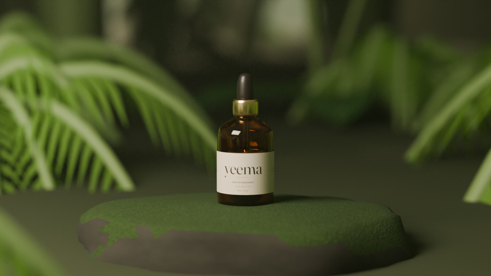
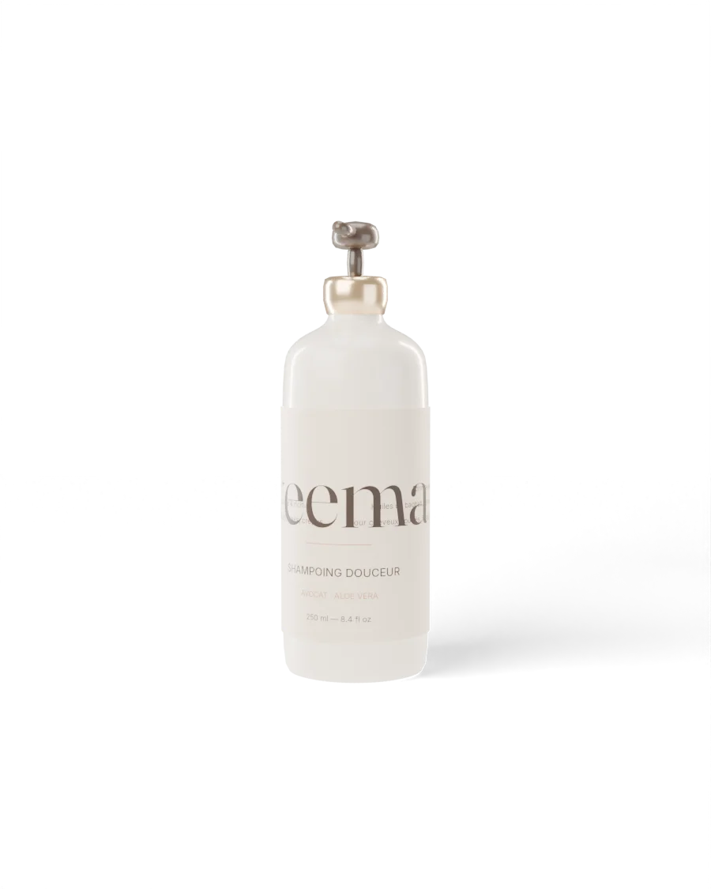

Best-seller
Huile nourrissante
34 €Baobab · Karité · Ricin — 30 ml
La jungle 3D n'a pas pu se charger sur cet appareil. Voici la gamme yeema.
Baobab, karité et ricin, pressés à froid pour les cheveux bouclés, frisés et crépus. Faites défiler pour avancer sur le sentier.
96 % d'ingrédients d'origine naturelle. Sans silicone, sans sulfate, sans parfum de synthèse.

La clairière, là où le sentier s'arrête.
Trois soins pensés pour fonctionner ensemble : laver sans dessécher, nourrir en profondeur, sceller l'hydratation.
Baobab · Karité · Ricin — 30 ml

Avocat · Aloe vera — 250 ml

Mangue · Beurre de cacao — 200 ml
Riche en oméga 6 et 9, elle gaine la fibre sans l'alourdir et redonne de la souplesse aux boucles sèches.
Récolté par des coopératives de femmes, il nourrit les pointes et limite la casse au démêlage.
Plus épaisse, elle scelle l'hydratation à l'intérieur du cheveu et fait briller les cuir chevelus secs.
Proche du sébum naturel, elle équilibre le cuir chevelu et apporte une finition légère.
Massez le shampoing douceur sur cuir chevelu mouillé. La mousse reste légère, la boucle garde sa forme.
2 fois par semaineAppliquez le masque mèche par mèche, laissez poser 10 minutes sous une serviette chaude, rincez à l'eau tiède.
1 fois par semaineChauffez trois gouttes d'huile entre vos paumes et pressez-les sur les longueurs encore humides.
Chaque soirChoisissez le motif le plus proche d'une mèche séchée à l'air libre. Nous adaptons la fréquence de chaque soin.